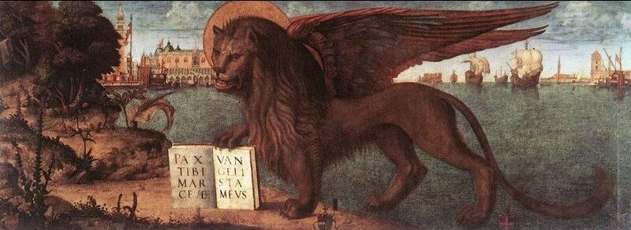

В начале XVI века непререкаемыми авторитетами в кораблестроении Венеции являлись братья (по другим данным, отец и сын) Леонардо и Маттео Брессаны. Но неожиданно их положение на Олимпе венецианских корабелов оказалось под угрозой из-за появления конкурента, человека странного, который не принадлежал ни к одной из известных фамилий венецианского Арсенала, и который (неслыханно!) даже никогда не держал в руках плотничьего топора на арсенальных верфях, являясь гуманитарием (гордитесь, о лирики, и пусть устыдятся физики), профессором греческого, читавшим лекции о Гесиоде и Пиндаре. Имя этого представителя конкурирующей фирмы было Ветторе Фаусто; это был тот самый гуманист, который в 1511 г. написал одну из первых книг (De comoedia libellus) по теории юмора.
Происходил В. Фаусто (1480-1550) из бедной семьи, не было у него и знаменитых предков, которыми так гордились венецианские патриции. Молодость свою он посвятил изучению гуманитарных наук и классических языков. Став постарше, много путешествовал (Италия, Испания, Франция, Германия), обогащая свои знания в каждой стране. Вернувшись в Венецию, участвовал в войнах, которые вела Республика, заслуги его были отмечены знаменитым кондотьером Бартоломео д’Альвиано (Bartolomeo d'Alviano). Выиграв в публичном диспуте, стал профессором греческой элоквенции в Венеции, занимал эту должность в течение 6 лет, встречая аплодисменты друзей и жесткую критику врагов. Вокруг Фаусто сложился круг единомышленников, выступающих за использование научных и художественных достижений античности в современном им мире. Налицо уже были воссозданные памятники архитектуры, на очереди стояло кораблестроение.
Фаусто был гуманистом, но это не означает, что он был гуманитарием в нашем понимании этого слова. Он изучал математику, он восстановил текст и перевел трактат Механические проблемы, который тогда приписывали Аристотелю, а сейчас автора обозначают как Псевдо-Аристотель. (Нам не удастся обойти стороной этот труд, если мы хотим изучать галеры глубоко. Так что к этой работе Фаусто мы еще вернемся.) Фаусто утверждал, что в трудах античных мыслителей он отыскал размерения квинкеремы – галеры, на каждой банке которой сидело по пять гребцов, которые гребли каждый своим веслом. (Мы узнаём в этой идее развитие системы гребли alla sensile.) Но не только из древних манускриптов черпал Фаусто знания корабельной науки. Он общался с мастерами и опытными мореплавателями Каталонии, Прованса, Нормандии, Страны басков, Генуи, получая информацию о состоянии кораблестроения того времени из первых рук.
В 1525-1526 гг., когда Коллегия Сената и Сенат Венеции решали, какой корабль использовать против пиратов, представлявших серьезную угрозу торговым коммуникациям Светлейшей, Маттео Брессан предложил свою модель парусного галеона; Ветторе Фаусто также вышел на конкурс со своей моделью квинкеремы. Первоначально Сенат выбрал проект круглого судна – галеона, однако сторонники Фаусто среди венецианской аристократии продолжали настаивать на квинкереме. Леонардо Брессан использовал все свое влияние, чтобы заблокировать проект Фаусто, но неожиданно его младший брат Маттео выступил на стороне конкурента и убедил руководство Арсенала, что проект Ветторе действительно дает возможность построить прочный, мореходный и, что самое важное в той обстановке, быстроходный корабль. Проект безусловно обеспечивает размещение на одной банке пяти гребцов, каждый из которых будет грести своим веслом. Специалисты все же сомневались, как сможет работать пятый от борта гребец на банке, если на существующих галерах и третьему приходится непросто. Фаусто продолжал настаивать на осуществимости своего проекта. Тогда Сенат принял решение позволить конструктору на деле показать осуществимость предлагаемой схемы, после чего, если результаты будут удовлетворительными, ему будет предоставлен стапель в Арсенальном доке, строительный лес и мастера для строительства квинкеремы.
Когда члены Коллегия Сената рассмотрели представленную модель и убедились в работоспособности новой системы гребли, они незамедлительно проголосовала за строительство нового корабля.
В апреле 1529 г. квинкерема была спущена на воду. Большая часть венецианских кораблестроителей того времени посчитала этот проект провальным. Чтобы подтвердить заявленные достоинства нового корабля, было решено устроить гонки галер с его участием. Если, несмотря на большие размеры, вооружение и повышенную мореходность, квинкерема сможет опередить легкие галеры-триремы, она оправдает вложенные в нее средства. Сам Фаусто был уверен в успехе, гонки были широко разрекламированы. Когда 21 мая Фаусто увидел квинкерему, выходящую из дока Арсенала с полной нагрузкой и артиллерией на борту, он убедился, что ее ход и скорость соответствовали его ожиданиям. Гонки состоялись 23 мая в районе острова Лидо. Об их результатах и последовавших за ними событиях расскажем в следующий раз.